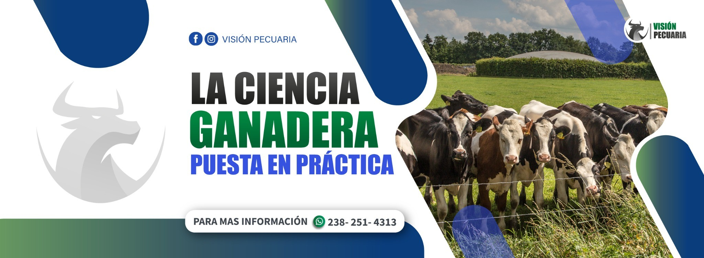
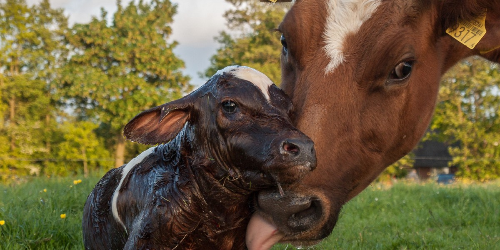

+5000 capacitados
Productores, técnicos y estudiantes han fortalecido su formación con nuestros programas.
Formación técnica especializada para productores, técnicos y estudiantes que buscan mejorar la productividad, el manejo y la rentabilidad en el campo.
En Visión Pecuaria impulsamos el crecimiento del sector con programas profesionales, consultoría técnica, certificación con valor curricular y acompañamiento aplicado a la realidad productiva.

Somos una empresa de consultoría y capacitación líder en su ramo, con experiencia en formación técnica aplicada y programas diseñados para generar resultados reales en el campo.
Productores, técnicos y estudiantes han fortalecido su formación con nuestros programas.
Instructores especializados y contenidos orientados a las necesidades del sector pecuario.
Certificados con folio y código QR verificable que respaldan tu capacitación.
Conocimiento práctico para mejorar productividad, manejo y toma de decisiones técnicas.
Mostramos únicamente nuestras áreas de capacitación, separadas de los cursos y flyers promocionales.

Nutrición, reproducción, manejo sanitario y optimización productiva.

Crianza, sanidad, inseminación y manejo estratégico en sistemas bovinos.

Salud, productividad, nutrición y prevención de problemas metabólicos.

Producción de postura, manejo sanitario y capacitación para emprendimientos avícolas.

Tilapia, camarón blanco, sistemas acuapónicos y producción sostenible.

Reproducción, medicina deportiva y manejo técnico de especies especiales.
Cada curso incluye acceso a grupo de WhatsApp, certificado con folio y QR curricular, además de clases grabadas y en vivo.
Todos nuestros programas incluyen constancia con valor curricular, certificado con folio único y código QR verificable para validar la autenticidad de la formación recibida.